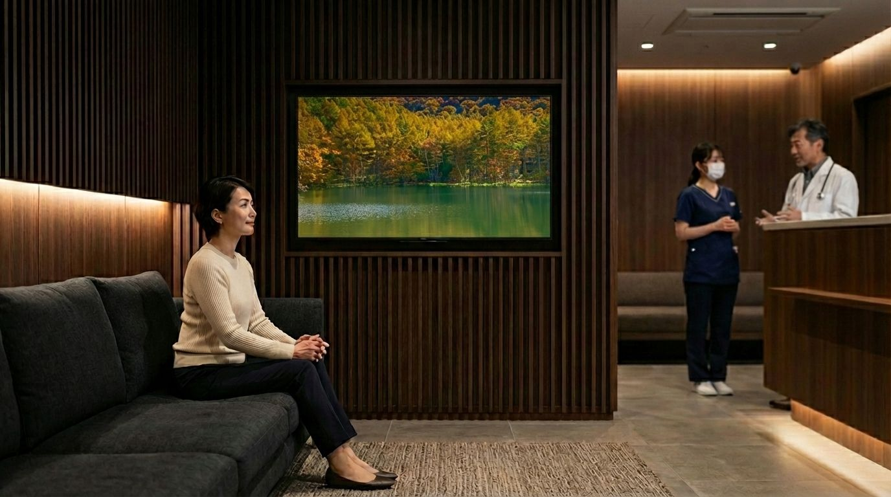
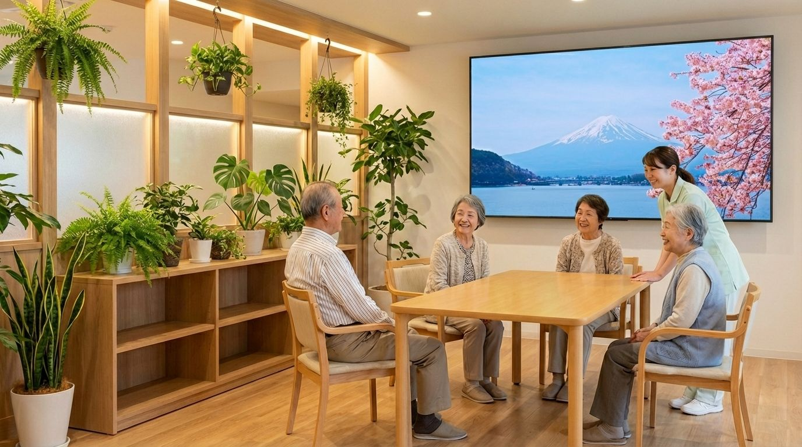

施設の種類によって、よく聞かれるお悩みが異なります。近いほうをご覧ください。
音量を上げれば呼び出しの声がかき消され、下げれば高齢の患者さんには聞こえない。字幕をつけても根本的な解決にならない。
診療の質には自信がある。でも「待ち時間が長い」の一言がGoogleの星を下げる。待合室の体感時間を変える手立てがほしい。
歯科不安の研究で、「ストレスフルな待合室環境」が不安のトリガーになると報告されています。治療が始まる前に緊張をほぐす待合室は、それ自体が治療の一部です。
センセーショナルなニュースや事件報道は、不安・抑うつの症状を抱える患者さんの精神状態に悪影響を与えることがある。かといって何も流さない沈黙の空間が、患者さんを落ち着かせるとも限らない。「穏やかな映像」という選択肢が、待合室にはあります。
心療内科・精神科の待合室では、「知人に見られたくない」「誰かと目が合うのが怖い」という患者さんが少なくない。モニターに視線が自然に向かう環境は、その緊張を静かにほぐします。
受診をためらう患者さんにとって、待合室の雰囲気は来院継続の判断材料になる。穏やかで落ち着いた空間は、「また来てもいい」という感覚を積み重ねます。
足腰が不自由で外出が叶わない方にも、桜や紅葉、海の景色を見せてあげたい。窓の外だけが「外の世界」になっていませんか。
テレビをつけっぱなしにするとチャンネル争いや音量問題が起きる。かといって何もない共用スペースは殺風景で、入居者が自然に集まりにくい。「ちょうどいい映像」が、まだ見つかっていません。
準備に時間がかかる割に盛り上がらない。季節の風景映像があれば、「あら、ここ知ってる」と自然に会話が始まる——そんな場面を作りたい。
自然映像が入居者の不穏行動を和らげることで、スタッフの対応負担も軽くなります。複数の研究で、入居者の落ち着きと介護負担の軽減に関連が確認されています。
自然映像の効果には、研究による裏付けがあります。複数の研究で、生理的・心理的な変化が確認されています。
実際の医療機関の待合室で、自然映像の設置前後を系統的に観察。歩き回りや受付への問い合わせ回数の減少が両施設で確認されています。
外来患者117名の比較試験で、テレビニュースでは気分に変化がなく、自然映像を流した群でのみ有意な改善が確認されています。
711名を対象とした研究で、「ストレスフルな待合室環境」が歯科不安のトリガー第2位（54.4%）であることが示されています。待合室を整えることは、治療の質を高めることに直結します。
視覚刺激のみでリラックス反応（アルファ波の増強）が確認されています。音量ゼロの運用でも、空間の空気を変える力があります。
ストレス低減効果において、2Dモニタ映像とVRの間に統計的な有意差はありませんでした。高価な機材は不要です。
壁も床も変えずに、空間の印象が変わる
その変化を起こすのは、映像です。待合室や共用スペースをどう整えるのか——風景帖が、静かに解決します。
届いた機器をテレビに繋いで電源を入れるだけ。翌朝から、その季節・その時間帯にふさわしい日本の風景が流れはじめます。ライブラリは150時間超。スタッフが映像を選ぶ手間も、ディスクを替える作業も、ネット回線を用意する必要もありません。
「また機器の管理が増えるの？」
——いいえ。
初期設定だけ済ませれば、あとはスタッフが触る必要は一切ありません。朝の電源も、季節ごとの映像の入れ替えも、すべて自動。曜日ごとに稼働時間も設定できます。
「音が問題にならない？」
——映像だけで成立します。
風景映像は音量ゼロでも十分に機能します。診察の呼び出しや事務の声を邪魔しません。もちろん、自然音をBGMとして小音量で流すことも可能です。
「同じ映像の繰り返しにならない？」
——映像は、現実の時間と同じ速度で進みます。
1シーン1時間の構成で、現実の時計と同期しています。日の出のシーンなら、本物の夜明けと同じ速度で空が変わっていきます。患者さんが30分待って診察室から戻れば、映像もその分だけ時間が進んでいます。「また同じシーンだ」と気づかれることがありません。季節・時間帯に合った映像への自動切替も含め、150時間超のライブラリが静かに回り続けます。湖面の光の角度は朝と午後で異なり、水の表情は二度と同じにはなりません。
「院内ネットワークに影響しない？」
——完全オフラインです。
インターネットへの接続は一切行いません。映像はすべて専用機器の大容量ストレージから再生。院内のセキュリティポリシーに影響を与えることなく導入できます。
他の選択肢と、何が違うのか。
| 当サービス 風景帖 | 地上波放送 | YouTube / Netflix 等 |
Blu-ray / DVD | |
|---|---|---|---|---|
| 施設での使用 | ◎正規ライセンス込み 追加費用なし |
◯家庭用受信機で受信可 内容・時間は選べない |
✕利用規約で「不特定多数への 上映」を明示禁止 |
△施設用ライセンスが 必要な場合あり |
| 映像の品質 | ◎4K HDR 10-bit オフライン安定再生 |
△最大HD画質 4K・HDR非対応 |
△圧縮・回線速度で劣化 広告が挿入される |
◯安定した高画質 |
| 運用の手間 | ◎完全自動 スタッフ操作不要 |
◯チャンネル・音量の 調整が必要 |
△都度の検索・操作要 | ✕ディスク交換が必要 |
| コンテンツ量 | ◎150時間超 四季×時間帯で自動切替 |
—放送中の番組のみ | —施設使用が規約上不可 | ✕1枚あたり約2時間 |
| 院内ネット環境 | 不要完全オフライン | 不要 | 必須高帯域・常時接続 | 不要 |
※ 地上波放送は家庭用受信機での施設内受信・視聴が可能ですが、放送内容・時間の選択はできず、コマーシャルや音声を伴う番組が流れる場合があります。また最大HD画質（1080i）であり、4K・HDRには対応していません。
※ YouTubeは利用規約「許可と制限事項」において「不特定または多数の人のために動画を上映すること」を明示的に禁止しています。Netflixは利用規約4.6項において「展示、上演」を禁止しており、待合室でのモニター表示はこれに該当します。
風景帖の映像はすべて、実在する日本の景勝地で撮影したものです。
その「実在」が、患者さんや入居者の方に、ある反応を引き起こします。
天橋立、桜島、知床——実在する地名だから、記憶との接続が起きます。「いつか行きたかった場所」「新婚旅行で訪れた海」。AIが生成した架空の景色には、この反応は生まれません。特に介護施設では、昔の記憶と映像が結びつき、自然な会話のきっかけになることが報告されています。映像が入居者の不穏を和らげることは、スタッフの精神的負担の軽減にもつながります。
日本三景はいずれも海に面した風景です。国が指定する特別名勝の自然景観のうち9割以上が、湖・川・海・滝など水のある景色です。日本人が古来「絶景」と呼んできたものの多くは、水辺の景色でした。
水面に映る朝焼け、滝の飛沫、湖面を渡る風——その瞬間にしか存在しない光と動きを、AIは記録できません。実際にその場所に立ち、シャッターを切った映像だけが持つものがあります。
実際に存在する風景は、見る人の心の拠り所になります。完璧に生成された映像より、本物の海のほうが、患者さんや入居者の方の時間を豊かにする——それは、人間が本能的に自然とのつながりを求めているからだと考えられています。
映像を12-bit ProRes RAWで撮影し、10-bit HDRで仕上げています。
実在の景色を、妥協のない品質でお届けするための、技術的なこだわりがあります。
北海道から桜島まで、有名な景勝地も静かな絶景も。日本三景はすべて海に面した風景であるように、日本の絶景の多くは水辺にあります。湖・海・川・滝のある景色を豊富に含む、150時間超のライブラリです。
場所に触れると、その映像をご確認いただけます。
全国100箇所以上のシーンを撮影。これはそのごく一部です。
※ 掲載映像はサンプルです。実際のサービスでは実時間（1シーン約1時間）で再生されます。
地図データ出典：国土数値情報（国土交通省）
1日あたり660円。施設の空間に、映像を届けるコスト。
初期費用は0円です。設定済みの専用機器・HDMIケーブルがすべて月額に含まれています。
2台目以降 15%引き
同一住所・同一請求書に限ります
※モニタ（4K HDR対応推奨）はお客様にてご用意ください
機器到着日から30日間は無料。お支払いは無料期間終了後の翌月1日分から。最低契約期間はありません。
お問い合わせから運用開始まで、シンプルな4ステップ。
フォームまたはメールでご連絡ください。台数やご要望をお伺いします。
契約内容をご確認いただき、稼働スケジュール（曜日・時間帯）をお知らせください。書類のやり取りはシンプルに進めます。
設定済みの再生機器を発送。モニタにHDMIケーブルでつなぐだけ。
初回の映像確認が終われば、以降はスタッフの手を煩わせません。
到着日から30日間無料。映像の雰囲気を確かめてからご判断ください。
リフォームではなく、映像が空間をつくる
実際に導入した施設のイメージです。

※ 室内空間はイメージです。モニターに映る映像は、実際にご提供する実写映像です。

※ 室内空間はイメージです。モニターに映る映像は、実際にご提供する実写映像です。
あなたの施設に導入したイメージを、写真1枚ご用意いただくだけでシミュレーションできます。
シミュレーターを開く →YouTubeの利用規約では、個人的かつ非商業的な利用のみが許諾されています。クリニックや介護施設で映像を流す行為は、患者さんの満足度向上を目的とした事業活動の一環にあたり、商用利用として規約違反となります。広告表示や通信の不安定さ以前に、そもそも利用が認められていません。風景帖は商用利用を正規に許諾した映像のみを提供しており、著作権・利用規約の両面で安心してご利用いただけます。
地上波のワイドショーやニュースは音量の問題が避けられず、番組の内容もコントロールできません。風景映像は音量ゼロでも機能し、不快な内容が流れる心配もありません。チューナーを搭載しない構成のため、NHK受信料も不要です。
いいえ。すべて機器内のデータから再生します。Wi-Fiもインターネット回線も不要で、院内ネットワークに一切影響しません。
はい、すべて実写です。風景帖の映像は、北海道から鹿児島まで、実際にその場所に立って撮影したものだけをお届けしています。風に揺れる木々、水面の反射、雲の流れ——現地でしか記録できない本物の光と時間をそのまま収めています。AI生成映像は一切含まれていません。
日本三景（松島・天橋立・宮島）はいずれも海に面した風景です。国が指定する特別名勝の自然景観を見ても、9割以上が湖・川・海・滝など水のある景色です。日本人が古来「絶景」と呼んできたものの多くは、水辺の景色でした。風景帖のライブラリはその事実に沿った構成になっています。水面の揺らめきや光の反射は、見る人が意識しなくても自然と目が追う穏やかな視覚刺激であることが研究でも確認されており、待合室や共用スペースに適した映像素材です。
ライブラリは150時間超を収録しており、季節と時間帯に応じて自動で切り替わります（春季 3〜5月／夏季 6〜8月／秋季 9〜11月／冬季 12〜2月）。1シーンは約1時間で構成されているため、30分後に戻れば映像もその分だけ進んでいます。同じ映像が繰り返し目に触れることはほぼありません。ライブラリ全体も2年ごとに大幅刷新しています。
ありません。映像はすべて当社で撮影・編集し、著作権を保有しています。商用利用の許諾が含まれた状態でご提供しますので、安心してご利用いただけます。
はい、ご利用いただけます。HDR非対応のテレビでも映像が不自然に見えることはありません。ただし、HDR対応テレビで視聴した場合と比べると、暗部の階調や色彩の豊かさに差が出ます。買い替えの際にHDR10対応モデルをお選びいただくと、映像の品質を最大限に引き出せます。
4K液晶テレビ（HDR10対応）を推奨しています。一般的な待合室には55〜65インチが最適です。広いスペースには75インチ以上もご検討ください。有機EL方式は焼付き防止機能による意図しない輝度低下があるため、液晶方式をおすすめしています。
窓からの光が画面に当たると、映像の暗部やHDRの色彩が見えにくくなります。窓に正対しない壁面への設置をおすすめします。やむを得ない場合は、ブラインドやカーテンで直射光を遮るだけでも効果があります。
1mのHDMIケーブルを同梱しています。再生機器をモニタ背面のVESAマウント等に取り付ける場合はこれで足りますが、設置場所によってより長いケーブルが必要になることがあります。
新たにご購入される場合は、「HDMI 2.0」または「18Gbps」と表記された製品をお選びください。パッケージに「認証済み」「認証取得」と記載されたものは表示スペックが保証されており、より安心です。「HDMI 2.1」「48Gbps」「Premium High Speed」「Ultra High Speed」表記もすべて使用可能です。
一方、「High Speed HDMI」とだけ表記されたケーブルはご注意ください。この表記には帯域幅18Gbpsの製品と旧世代の10.2Gbpsの製品が混在しており、外観から区別できません。旧世代（10.2Gbps）ではHDR信号の伝送ができません。「HDMI 1.4」と明記されている場合も同様に非推奨です。
ケーブル長は5m未満であれば一般的なケーブルで問題ありません。5m以上になる場合は、信号減衰への対策として光ファイバーHDMIケーブルまたはアクティブタイプをお選びください。また、シールド性能の低いケーブルではWi-Fiに影響が出る場合があるため、シールド構造が明記された製品が安心です。
モニタの手配・設置はサービスに含まれていません。壁の構造や配線の取り回し、既存の内装との兼ね合いは、日頃から貴施設をよくご存知の地元業者が対応するのが最も確実です。お付き合いのある内装業者さんがいればそちらへ、なければ一般的な依頼先の探し方をご案内します。
1台の再生機器から2台のモニタに同時出力できますが、OS仕様によりHDR表示が無効になります。
通常使用での故障には無償で交換対応いたします。お客様の過失による故障の場合は実費をご負担いただきます。
季節と時間帯に応じた映像への切り替えは機器が自動で行うため、スタッフの操作は不要です。ライブラリ全体の刷新は2年ごとに実施しており、その際は機器の郵送交換で対応します。お手元の機器を着払いでご返送いただき、新しい映像を収録した機器をお送りします。
はい。曜日ごとに稼働時間帯を設定でき、診療時間や営業時間に合わせて自動で起動・スリープします。
主に2つの経路が考えられます。ひとつは間接的な効果で、自然映像が入居者・患者の不穏行動や不安を和らげることで、スタッフの対応負担が軽減されるというものです。もうひとつは直接的な効果です。高齢者医療施設の職員13名を対象とした国内の交差実験（高山ら 2020）では、休憩室に自然の木漏れ日映像を2Dで投影したところ、通常の休憩と比べてストレス指標（唾液アミラーゼ活性）が有意に低下し、緊張・不安感の改善と職務満足度の向上傾向が確認されています。スタッフ自身が映像を目にする環境でも、一定のリラクゼーション効果が期待できます。
機器到着日から30日間は月額料金が発生しません。お支払いは無料期間終了後の翌月1日分からとなります。無料期間中に解約される場合も料金はかかりません。解約時は再生機器をご返送ください（送料はお客様ご負担）。
はい。最低契約期間はありません。解約のお申し出から翌月末で契約終了となります。解約時は再生機器のご返却をお願いいたします（送料はお客様ご負担）。
ご導入いただけます。不妊治療中の患者さんは精神的な負担が大きく、国立成育医療研究センターの調査ではART開始初期の女性の54%に軽度以上の抑うつ症状が確認されています。治療周期によっては待ち時間が1〜3時間に及ぶことも多く、待合室の環境が患者さんの心理状態に与える影響は小さくありません。自然映像が待合室の患者行動や感情に与える効果は複数の医療施設での研究で確認されており、不妊治療クリニックの待合環境づくりにも適しています。
再生機器のみで月額約200円程度です（24時間稼働の場合）。モニタの消費電力は含みません。
初月無料トライアル実施中
お問い合わせは「興味を持っただけなのですが」も、もちろん大丈夫です。